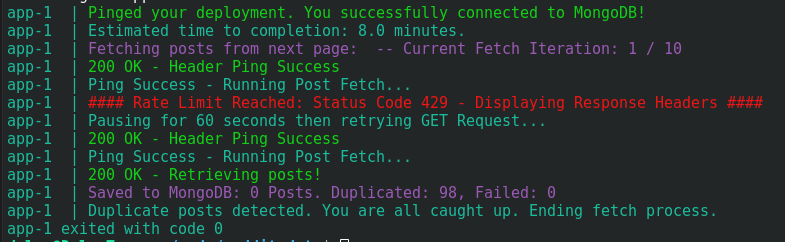
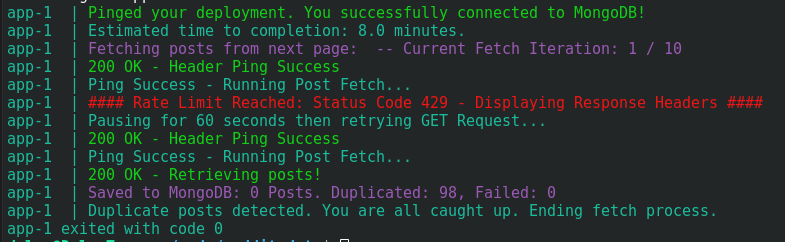

Hello! Welcome to my slice of the interwebs. I develop software primarily to provide my dog, Murphy Jo, all the toys she deserves. My most recent experience is Python, FastAPI, AWS API, and Docker. In the past few years I worked with C#, .NET, and Azure. I like to explore and work in different technologies. Throughout my career I have done Backend, Native Mobile (iOS & Android), Web, and Internal Tools, and Desktop Software.
Outside of work I enjoy reading and learning, drawing, and spending most of my time with my dog.
My current reading list is surrounding Cryptography and it's history, and current applications, and (trying) to understand the math behind it. I am currently reading: The Code Book by Simon Singh.
Work Experience
Senior Backend Developer @ Mad Hatter Tech
Jul 2025 - Nov 2025
- Developing microservices using Python, FastAPI, and Docker
- Developing websites using Drupal
- Python, FastAPI, Drupal, Docker, AWS API, AWS
Senior Software Engineer @ Carebook Technologies Inc
May 2023 - Aug 2025
- Building new features and handling issues across our multiple environments.
- Handling production issues relating to Kubernetes services and the back-end platforms.
- Creating internal tooling using C#, .NET, and Powershell Script.
- Azure, Kubernetes, Docker, C#, .NET Framework, SQL, React.js, TypeScript
Senior Software Engineer @ Cannametrics
Nov 2022 - Mar 2023
- Building Data Visualization into the platform using Chart.js to allow users a better way to view their data.
- Integrating the Product Matching Process into a Machine Learning service.
- AngularJS, TypeScript, Microsoft Azure, C#, .NET Framework, SQL
Software Developer @ EventConnect
Mar 2021 - Nov 2022
- Created and maintained an Internal Tool, built using Go and Bash, used to download and import production databases for use with local development. This tool would scrub any personal and private data from the database upon request for download.
- Managed the Development Environment experience for the Dev team by integrating Docker for the dev platform.
- Go, Bash, MySQL, Docker, Laravel, Rackspace
Freelance @ Gnarled Root Systems
Dec 2018 - Present
- C#, .Net-Core, ASP.Net, JavaScript, Bash, PowerShell, Python, Laravel, PHP, Symfony, MySQL, WordPress, SSO Integrations, Okta, Azure, Digital Ocean
Internal Tools Engineer @ BriteCore
Jan 2019 - Dec 2019
- Python, Bash, MySQL, Docker, Laravel, AWS
WordPress Developer / Operations @ tbk Creative
Jan 2017 - Nov 2018
- WordPress, PHP, Mysql, AWS, Jenkins, Gitlab CI
Backend Developer @ RaceRoster
Jun 2016 - Jan 2017
- PHP, Mysql, Symfony, Python
Software Developer @ 787 Networks
Sep 2015 - Jun 2016
- C++, DirectX, Chromium Embedded Framework, C#, WPF, Swift, Obj-C
iOS Developer @ Arcane
Feb 2015 - Sep 2015
Web Developer @ rTraction
Dec 2013 - Jan 2015
- WordPress, Drupal, CodeIngiter, Laravel, MySQL, PHP
Developer Internships @ rTraction, Digital Echidna
2012 - 2013
- WordPress, Drupal, CodeIngiter, Laravel, MySQL, PHP


 
